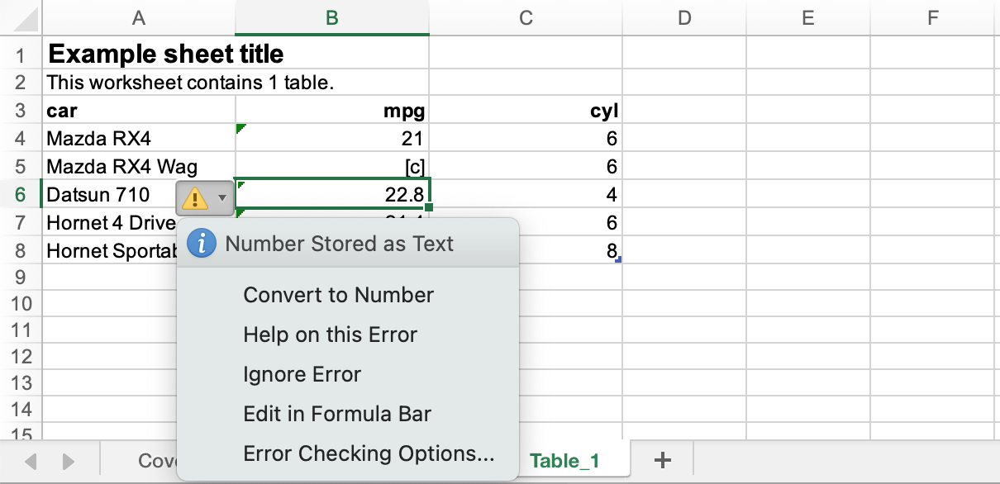

nums <- runif(100)
typeof(nums); class(nums)[1] "double"[1] "numeric"April 23, 2023
I forgot that the base R function type.convert() exists. Handy for ‘simplifying’ all the columns of a dataframe to appropriate data types.
{a11ytables} is an R package that lets you generate publishable spreadsheets that follow the UK government’s best practice guidance.
One requirement is to replace missing values with placeholder symbols. For example, suppressed data can be replaced with the string "[c]" (‘confidential’).
Of course, R’s behaviour means it can store only one data type per column, so a numeric-type column will be automatically converted to character when you introduce at least one string value (i.e. something in "quotes").2
For example, this vector is type ‘double’ (i.e. decimals and not ‘whole-number’ integers) and has the more general ‘numeric’ class:
The whole thing is converted to character type if you append just one character value.
This is known behaviour, yes, but it causes a minor annoyance in the xlsx files output from an {a11ytables} workflow: Excel puts a warning marker in the corner of any cell in a text column that contains a numeric value.3

Cat left a GitHub issue related to this: columns entirely made of numbers were being marked by Excel with the ‘number in a text column’ warning. In this case, it was because Cat’s suppression process resulted in all columns being converted to character.
It would be great to convert back to numeric any columns that did not receive a placeholder symbol during the wrangling process. How can you do this?
Let’s consider a demo example. First I’ll attach {dplyr}, which is commonly used by stats producers in the UK government.
Here’s a very simple dataframe, tbl, to use as a demo. Column x contains values that will need to be suppressed because they’re lower than 5. There are no such values in column y.
set.seed(1337)
tbl <- tibble(
id = LETTERS[1:5],
x = round(runif(5, 0, 10), 2),
y = round(runif(5, 6, 10), 2)
)
tbl# A tibble: 5 × 3
id x y
<chr> <dbl> <dbl>
1 A 5.76 7.33
2 B 5.65 9.79
3 C 0.74 7.12
4 D 4.54 6.98
5 E 3.73 6.58So, to borrow and simplify Cat’s approach: for each numeric column in tbl (i.e. x and y), replace any value of less than 5 with the placeholder string "[c]", otherwise retain the original value.
tbl_supp <- tbl |>
mutate(
across(
where(is.numeric),
\(value) if_else(
condition = value < 5,
true = "[c]",
false = as.character(value)
)
)
)
tbl_supp# A tibble: 5 × 3
id x y
<chr> <chr> <chr>
1 A 5.76 7.33
2 B 5.65 9.79
3 C [c] 7.12
4 D [c] 6.98
5 E [c] 6.58 So column x now contains text values and has predictably been converted to character, which you can see as <chr> in the tibble header. But notice that y is also character type despite all the numeric values being retained.
This happened because the if_else() we used to create tbl_supp required the true and false arguments to resolve to the same type. The false argument must use as.character() because true resolves to the character value "[c]".
Ideally we’d perform our suppression step but column x would end up as character and y as numeric. How can we achieve this?
In this section are some methods to fix the problem by:
Of course, we could run tbl_supp |> mutate(y = as.numeric(y)) to convert that specific column back to numeric. But imagine if you have a lot more columns and you can’t be sure which ones need to be converted.
Maybe you could apply as.numeric() across all columns? Columns of numbers stored as text will then be converted entirely to numeric:
But this causes a problem for character columns that contain text, like our placeholder symbol:
So "1" becomes 1, but we’re warned that "[c]" has been converted to NA (well, NA_real_, which is the numeric form of NA).
We could do something convoluted, like see which columns didn’t gain NA values and should be retained as numeric. But that’s bonkers. This approach ultimately makes things worse because we’ve actually lost information!
Really we want to check each column to see if it contains numbers only and then convert it to numeric. How?
There’s a handy base R function that I had forgotten about: type.convert().
It takes a vector and, in turn, tries to coerce it to each data type. The process stops when coercion occurs without error. As the help file (?type.convert) puts it:
Given a vector, the function attempts to convert it to logical, integer, numeric or complex, and when additionally as.is = FALSE… converts a character vector to factor. The first type that can accept all the non-missing values is chosen.
And handily:
When the data object x is a data frame or list, the function is called recursively for each column or list element.
So we can pass our entire dataframe to type.convert() and it’ll check them all for us:
# A tibble: 5 × 3
id x y
<chr> <chr> <dbl>
1 A 5.76 7.33
2 B 5.65 9.79
3 C [c] 7.12
4 D [c] 6.98
5 E [c] 6.58As we wanted, our character column y has become numeric type (<dbl>) while x remains as character. Neato.
There are probably better approaches to this problem from the outset, rather than after-the-fact application of type.convert().
As Tim has pointed out, you could actually just use the base R form of ifelse():
tbl |>
mutate(
across(
where(is.numeric),
\(value) ifelse(
test = value < 5,
yes = "[c]",
no = value
)
)
)# A tibble: 5 × 3
id x y
<chr> <chr> <dbl>
1 A 5.76 7.33
2 B 5.65 9.79
3 C [c] 7.12
4 D [c] 6.98
5 E [c] 6.58I think people use dplyr::if_else() for (a) consistency if they’re already using tidyverse in the script and (b) it’s ‘strictness’ compared to ifelse(). if_else() will force you to declare the true and false arguments so they resolve to the same type, whereas ifelse() will silently force type coercion, which may be undesirable in some cases.
Another method would be to iterate the suppression over only the columns that need it. For example, you could do that with a simple for and if:
cols_numeric <- names(select(tbl, where(is.numeric)))
for (col in cols_numeric) {
if (any(tbl[col] < 5)) {
tbl[col] <- ifelse(
tbl[col] < 5,
"[c]",
as.character(tbl[[col]])
)
}
}
tbl# A tibble: 5 × 3
id x y
<chr> <chr> <dbl>
1 A 5.76 7.33
2 B 5.65 9.79
3 C [c] 7.12
4 D [c] 6.98
5 E [c] 6.58This reads as ‘for each numeric column that contains at least one value less than 5, replace those values with the placeholder symbol "[c]".’
It’s almost like this post could have just been a tweet saying ‘😮 yo, type.convert() is 🪄magic🪄 y’all’. But this post is now a handy reference in case anyone has the same problems with Excel’s handling of {a11ytables} outputs in future.
Also I needed to hit my pun quota for the month.4
Last rendered: 2023-07-17 18:06:53 BSTR version 4.3.1 (2023-06-16)
Platform: aarch64-apple-darwin20 (64-bit)
Running under: macOS Ventura 13.2.1
Matrix products: default
BLAS: /Library/Frameworks/R.framework/Versions/4.3-arm64/Resources/lib/libRblas.0.dylib
LAPACK: /Library/Frameworks/R.framework/Versions/4.3-arm64/Resources/lib/libRlapack.dylib; LAPACK version 3.11.0
locale:
[1] en_US.UTF-8/en_US.UTF-8/en_US.UTF-8/C/en_US.UTF-8/en_US.UTF-8
time zone: Europe/London
tzcode source: internal
attached base packages:
[1] stats graphics grDevices utils datasets methods base
other attached packages:
[1] dplyr_1.1.2
loaded via a namespace (and not attached):
[1] digest_0.6.31 utf8_1.2.3 R6_2.5.1 fastmap_1.1.1
[5] tidyselect_1.2.0 xfun_0.39 magrittr_2.0.3 glue_1.6.2
[9] tibble_3.2.1 knitr_1.43.1 pkgconfig_2.0.3 htmltools_0.5.5
[13] generics_0.1.3 rmarkdown_2.23 lifecycle_1.0.3 cli_3.6.1
[17] fansi_1.0.4 vctrs_0.6.3 withr_2.5.0 compiler_4.3.1
[21] rstudioapi_0.15.0 tools_4.3.1 pillar_1.9.0 evaluate_0.21
[25] yaml_2.3.7 rlang_1.1.1 jsonlite_1.8.7 htmlwidgets_1.6.2